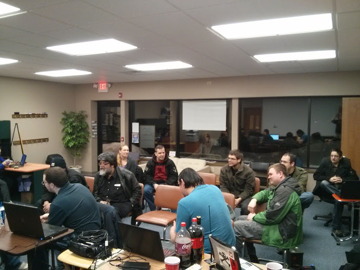
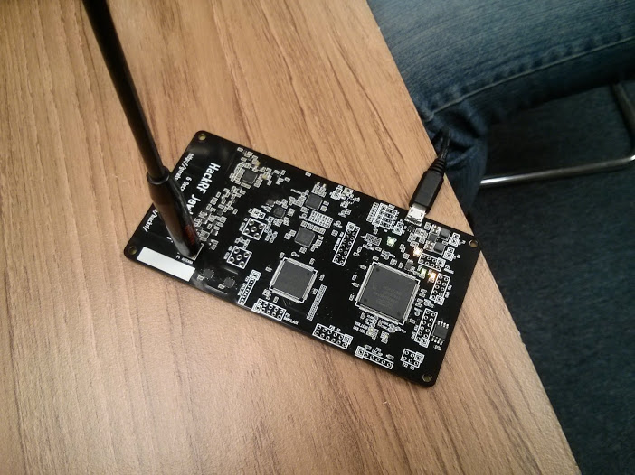

Barcamp Milwaukee 9
For the ninth consecutive year, BarCampMilwaukee is returning to Bucketworks the first weekend in October. Doors open at 9:00 AM, Saturday October 4th.
A BarCamp is a wholly unique event that provides a free, open-environment forum where the participants are in charge of what happens. It is an interactive conversation where professionals and curious alike come to learn, teach, and imagine. This revolutionary “unconference” allows participants to float from one session to another, and encourages the development of interesting ideas and spontaneous discussion. Since the first BarCamp in the US nine years ago, hundreds of BarCamps have been organized throughout the world.
Throughout BarCampMilwaukee’s nine year run, participants have been involved in a wide array of session topics ranging from: Software Development: Ruby on Rails, Drupal, and JavaScript. Technologies: 3d printing/scanning, video editing, robots, and solutions for non-profits. Solutions for small businesses and non-profits. All the way to things like Zombie Defense Preparation, lockpicking, sushi making, and many other topics for makers, DIYers, artists and other creatives. please register for BarCampMilwaukee 9 here
Bucketworks is a “health club for the brain.” A co-working, meetup, and practice space for creative professionals offering memberships and space rentals for the community. Bucketworks is a program of The School Factory, a 501(c)(3) nonprofit organization that builds value-creating communities and spaces to transform education, economy, and talent.
March meeting fun
March came in, and was an awesome time. Too bad ngharo and vlad missed it. We were hopping at the Meetupery

dw5304 got things started with some radio hacking, with his HackerRF board that he’s managed to un-brick. We swept some bands, and learned that car FOBs generally work around 300mhz for sending signals. And Chrysler FOBs have some good output!

After that, we had some fun with a giant lock that Klaviel tried his hand at. This thing is used for some serious security!